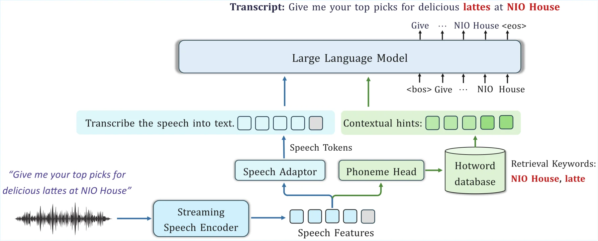
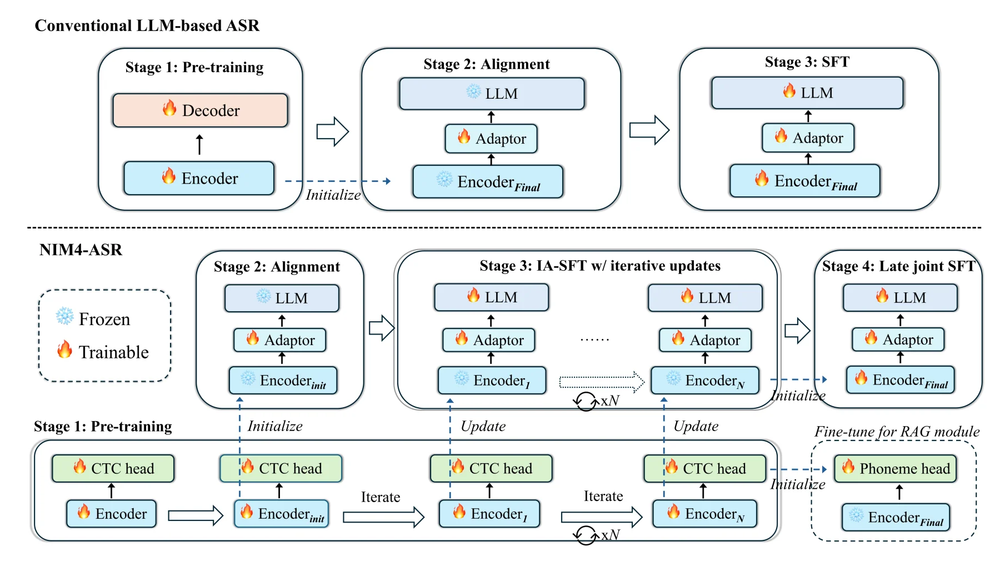

Towards Efficient, Robust, and Customizable Real-Time LLM-Based ASR
NIM4-ASR is a 2.3B-parameter production-oriented LLM-based ASR framework designed for
low-latency streaming speech recognition, robustness against hallucinations, and million-scale
hotword customization.
Yuan Xie*, Jiaqi Song*, Guang Qiu, Xianliang Wang, Kai Qiao, Junfeng Yuan,
Shengqing Liu, Yi Zhang, Bowen Chen, Ming Lei, Jie Gao, Jie Wu
This demo illustrates streaming inference with real-time punctuation
insertion, followed by a full-context second-pass LLM decoding update once
all streaming chunks have been received.
Sports commentary. The model can leverage semantic context to correct the streaming partial result from "那时" to "纳什".Automotive safety terminology. We provide streaming punctuation insertion to improve the readability of real-time transcriptions.
Streaming Inference with Online Hotword Customization
This demo illustrates streaming inference with online hotword retrieval and biasing:
hotwords are retrieved on-the-fly and injected into the decoding context
in real time. Our hotword customization module does not require hotwords to be manually specified —
they can instead be retrieved automatically from a large-scale database via phoneme-based RAG.
Location-aware hotwords. Real-time hotword biasing corrects "彗新" to "惠新".Celebrity-aware hotwords.
Comparison with Leading Open-Source LLM-ASR Models
yeah I watched the movie for twice twice and my my best friends have watched from nine nine the nine times oh my god and Im so shock right now it is incredibly hes yeah hes the big hes the big fan of taylor swift
WER 8.89yeah I watched the movie for twice twice and my my best friends have watched it for nine nine the nine times oh my god and Im so shocked right now it is incredibly hes yeah hes the biggest hes the big fan of taylor swift
WER 22.22yeah I watched the movie for twice twice and my my best friends have watched it for nine nine the nine times oh my god __ Im so shocked right now it it it incredibly hes a yeah hes the biggest hes the big fan of takers with
WER 17.78yeah I watched the movie for twice twice and my my best friends have watched it for nine nine __ nine times oh my god __ Im so shocked right now it it is incredibly hes a yeah hes the biggest hes the big fan of taylor swift
WER 15.56yeah I watched the movie for twice twice and my my best friends have watched it from nine nine the nine times oh my god is Im so shocked right now it it it is incredibly hes a yeah hes the biggest hes the big fan of taylor swift
WER 17.78yeah I watched the movie for twice twice and my my best friends have watched it for nine nine the nine times oh my god __ Im so shocked right now it it its incredibly hes a yeah hes the biggest hes the big fan of taylor swift
WER 44.44yes I watched the movie __ twice and my __ best friend has watched it nine times oh my god __ Im so shocked right now __ incredibly hes __ the biggest fan of taylor swift
5442-32873-00140000009853(librispeech_test_other)
luke took care of mister larkins dogs and groomed mister wylders horse and cleaned up his dog cart for mark being close about money and finding that the thing was to be done more cheaply that way put up his horse and dog cart in the post office premises and so evaded the livery charges of the brandon arms
WER 1.69luke took care of mister larkins dogs and groomed mister wilders horse and cleaned up his dog cart for mark being close about money and finding that the thing was to be done more cheaply that way put up his horse and dog cart in the post office premises and so evaded the livery charges of the brandon arms
WER 15.25luke took care of mister larkins dogs and groomed mister wylders horse and cleaned up his dogcart for mock wing clothes about money and finding that the thing was to be done more cheaply that way put up his horse and dogcart in the postoffice premises and so evaded the livery charges of the brandon arms
WER 5.08luke took care of mister larkins dogs and groomed mister wilders horse and cleaned up his dog cart for mark being close about money and finding that the thing was to be done more cheaply that way put up his horse and dog cart in the post office premises and so evaded the livery charges of the brand and arms
WER 8.47luke took care of mister larkins dogs and groomed mister wilders horse and cleaned up his dogcart for mark being close about money and finding that the thing was to be done more cheaply that way put up his horse and dogcart in the post office premises and so evaded the livery charges of the brandon arms
WER 8.47luc took care of mrlarkinss dogs and groomed mrwilders horse and cleaned up his dog cart for mark being close about money and finding that the thing was to be done more cheaply that way put up his horse and dog cart in the post office premises and so evaded the livery charges of the brandon arms
WER 10.17luke took care of mister larkinss dogs and groomed mister wilders horse and cleaned up his dogcart for mark being close about money and finding that the thing was to be done more cheaply that way put up his horse and dogcart in the post office premises and so evaded the livery charges of the brandon arms
I need to review the budget again before approving the purchase request
WER 0.00I need to review the budget again before approving the purchase request
WER 33.33I need to review the budget again before approving them for the budget meeting
WER 25.00I need to review the budget again for approving the purchases
WER 25.00I need to review the budget again before approving it
WER 8.33I need to review the budget again before approving the purchase order
WER 41.67I need to review the budget again for upcoming delta purchases
Mandarin-English Code-switch
Speech Clip
Ground Truth reference transcription
Our NIM4-ASR (streaming)
Fun-ASR Nano-2512
Qwen3-ASR 1.7B
FireRedASR2S LLM
Step-Audio2 Mini
Qwen3-Omni 30B-A3B Instruct
validation-00000-of-00001_00570(ascend)
平时就是我们做pre的时候他们尽量就是
CER 0.00平时就是我们做pre的时候他们尽量就是
CER 5.88平时就是我们做推的时候他们尽量就是
CER 5.88平时就是我们做推的时候他们尽量就是
CER 5.88平时就是我们做play的时候他们尽量就是
CER 5.88平时就是我们做play的时候他们尽量就是
CER 5.88平时就是我们做play的时候他们尽量就是
ZH-CN_U0018_S0_32(cs_dialogue)
好的of course
CER 0.00好的of course
CER 50.00had that of course
CER 50.00hada of course
CER 50.00how that of course
CER >100哈那那那那那那那那那那那那那那那那那那那......
CER 0.00好的of course
Hallucination-Prone Cases
Speech Clip
Ground Truth reference transcription
Our NIM4-ASR (streaming)
Fun-ASR Nano-2512
Qwen3-ASR 1.7B
FireRedASR2S LLM
Step-Audio2 Mini
Qwen3-Omni 30B-A3B Instruct
whisper_S0189_M-0189-2_014060-014592(aishell_6c)
恋人间的默契像是无声的语言相视一笑便懂
CER 5.26恋人间的默契像是无声的语言相识一笑便懂
CER 26.32恋人间的默契像是无声的语言像是一小片
CER 15.79猎人间的默契像是无声的语言像是一笑便懂
CER >100阿弥陀佛阿弥陀佛阿弥陀佛阿弥陀佛阿弥陀佛阿弥陀佛阿弥陀佛......
CER 26.32恋人间的默契像是无声的语言像是一小片毒
CER >100在美丽的湖边划一只小船享受着自然的亲密接触
whisper_S0189_M-0189-2_099060-099700(aishell_6c)
在工作与生活之间找到平衡是一门深奥的艺术
CER 0.00在工作与生活之间找到平衡是一门深奥的艺术
CER 5.00在工作与生活之间找到平衡是一门深厚的艺术
CER 5.00在工作与生活之间找到平衡是一门深厚的艺术
CER >100搿么侬讲到搿个叫啥个呃吃个物事对伐我觉着也蛮重要个为啥道理呢......
CER 5.00在工作与生活之间找到平衡是一门深厚的艺术
CER >100突然的灵感如同泉涌创作的激情也随之而来热血沸腾
Method
Architecture and Training

Modular ASR Architecture
The architecture comprises a streaming Conformer encoder, a two-layer speech adaptor, a phoneme-level CTC head with a RAG module,
and a Qwen3-1.7B LLM decoder.

Role-Aligned Training
Training consists of CR-CTC pretraining, alignment, CKA-triggered IA-SFT, late-stage joint SFT, context SFT,
and ASR-specific GRPO-style reinforcement learning.
Our training design, from pretraining through SFT, is guided by an entropy-allocation analysis of the Encoder–Adaptor–LLM architecture.
Readers interested in this topic can refer to our work: "Rethinking Entropy Allocation in LLM-based ASR: Understanding the Dynamics between Speech Encoders and LLMs"
Paper
Streaming
Real-Time Inference
NIM4-ASR uses a decoupled deployment architecture: the encoder runs on Triton; the adaptor and LLM run in a
vLLM-based engine; and the phoneme head with RAG module run on CPU. Speech embeddings are appended incrementally
via streaming chunked prefill, enabling real-time partial transcription followed by a stable second-pass final decoding after VAD detects the end of speech.
Customization
Phoneme-Level RAG
Hotwords are encoded as phoneme-token sequences in a trie structure built upon an Aho–Corasick automaton for efficient retrieval.
Exact phoneme matching and longest-match filtering support databases containing millions of hotwords while maintaining
sub-millisecond retrieval latency and high precision..
Results
To reduce evaluation variance caused by surface-form differences, including numeric formatting and
filler-word usage, we normalize all transcriptions with WeTextProcessing, a WFST-based toolkit.
Although normalization may lower absolute error rates, applying the same pipeline to every system
enables a fairer comparison of recognition performance. All baselines are reproduced according to
their official guidelines.
TL;DR: We apply the same WeTextProcessing-based normalization to all systems, reducing formatting-related
noise and enabling fairer comparisons, although the resulting error rates may be lower than those reported
under standard evaluation protocols.
Public Benchmarks (Metric: CER/WER)
Benchmark
Fun-ASR Nano-2512
GLM-ASR Nano-2512
Qwen3-ASR 1.7B
FireRedASR2S LLM
Step-Audio2 Mini
Qwen3-Omni 30B-A3B Instruct
NIM4-ASR (offline)
NIM4-ASR (streaming)
Model Size
0.8B
1.5B
2.0B
8B+
8B+
30B-A3B
2.3B
2.3B
Mandarin
AISHELL-1 dev | test
1.59 | 1.81
2.40 | 2.41
1.40 | 1.51
0.60 | 0.64
0.76 | 0.81
0.86 | 0.92
0.43 | 0.57
0.43 | 0.60
AISHELL-2-ios dev | test
2.62 | 2.73
3.21 | 3.45
2.41 | 2.60
2.07 | 2.08
2.24 | 2.29
2.11 | 2.31
2.28 | 2.43
2.33 | 2.49
AISHELL-2021-Eval A | C | D
4.75 | 4.29 | 2.33
7.25 | 9.48 | 3.40
4.22 | 3.51 | 1.82
13.40 | 3.92 | 4.68
4.54 | 3.69 | 2.34
5.19 | 3.34 | 1.66
3.12 | 1.51 | 1.81
3.28 | 1.63 | 2.22
WeNetSpeech meeting | net
4.68 | 5.22
6.87 | 5.72
4.00 | 4.13
3.36 | 3.52
4.23 | 4.63
3.92 | 3.85
4.91 | 4.72
5.71 | 5.00
SpeechIO
2.78
3.17
2.55
2.20
3.41
2.33
2.61
2.84
Chinese Dialects
WeNetSpeech-Chuan easy | hard
13.21 | 23.76
20.95 | 33.61
11.18 | 20.35
10.36 | 20.07
13.99 | 25.35
14.13 | 25.16
10.51 | 20.58
11.22 | 20.37
WeNetSpeech-Yue short | long
7.31 | 10.02
16.78 | 13.97
5.79 | 8.00
5.05 | 10.45
7.78 | 8.44
6.97 | 8.60
5.12 | 8.58
5.39 | 9.62
KeSpeech
7.18
9.59
4.98
3.05
3.98
6.00
4.40
5.08
English
LibriSpeech-dev clean | other
1.63 | 4.06
1.82 | 3.93
1.54 | 3.14
1.27 | 2.63
1.06 | 2.48
1.08 | 2.10
1.13 | 2.45
1.18 | 2.86
LibriSpeech-test clean | other
1.63 | 4.35
1.96 | 4.29
1.56 | 3.49
1.29 | 2.97
1.22 | 2.61
1.15 | 2.38
1.19 | 2.53
1.29 | 2.92
VoxPopuli dev | test
7.86 | 7.70
8.78 | 8.52
7.58 | 7.42
9.38 | 9.24
8.86 | 8.37
6.86 | 6.75
6.18 | 6.08
6.26 | 6.22
MLS-English
6.80
5.32
4.93
4.71
4.37
4.04
4.77
5.04
Mandarin–English Code-Switching
CS-Dialogue
5.37
6.15
5.44
4.63
9.46
8.51
4.70
4.91
ASCEND
11.91
12.29
10.87
10.22
13.50
18.68
11.46
11.85
Lyrics
M4Singer
5.25
18.45
5.72
N/A
9.68
8.40
6.39
6.94
Internal Benchmarks (Metric: CER/WER)
Benchmark
Fun-ASR Nano-2512
GLM-ASR Nano-2512
Qwen3-ASR 1.7B
FireRedASR2S LLM
Step-Audio2 Mini
Qwen3-Omni 30B-A3B Instruct
NIM4-ASR (offline)
NIM4-ASR (streaming)
Model Size
0.8B
1.5B
2.0B
8B+
8B+
30B-A3B
2.3B
2.3B
Point of Interest (POI)
City A
7.07
14.68
9.14
8.54
9.41
9.67
3.86
3.85
City B
8.50
15.75
10.59
10.43
11.67
11.73
4.86
4.94
City C
7.60
17.55
10.01
10.17
11.35
12.18
3.77
3.81
City D
7.42
17.91
9.77
9.51
11.55
10.86
4.10
4.17
Media
Music
12.60
24.25
12.67
12.13
14.94
15.89
5.75
5.78
Video
8.27
20.35
9.69
9.38
12.30
15.33
2.99
3.03
Radio
13.69
19.82
10.51
11.84
14.21
17.91
1.21
1.17
Device Control
Vehicle control
4.74
8.78
5.31
4.52
4.97
4.18
1.88
1.78
Conversational
Vehicle-domain chat easy | hard
3.75 | 5.92
5.63 | 10.12
3.31 | 5.96
2.93 | 5.61
2.35 | 7.63
5.98 | 6.60
2.70 | 4.88
2.76 | 4.83
Multi-domain chat
1.65
1.89
1.33
1.27
1.49
5.34
1.55
1.75
Hallucination Rate (%)
Category
Fun-ASR Nano-2512
GLM-ASR Nano-2512
Qwen3-ASR 1.7B
FireRedASR2S LLM
Step-Audio2 Mini
Qwen3-Omni 30B-A3B Instruct
NIM4-ASR (offline w/o RL)
NIM4-ASR (offline w/ RL)
Mandarin (Avg.)
0.018%
0.030%
0.018%
0.165%
0.020%
0.013%
0.003%
0.002%
Dialect (Avg.)
0.217%
0.201%
0.120%
0.298%
0.194%
0.370%
0.122%
0.117%
English (Avg.)
0.014%
0.014%
0.014%
0.014%
0.014%
0.007%
0.007%
0.007%
Code-switch (Avg.)
0.397%
0.315%
0.345%
0.335%
1.255%
1.778%
0.261%
0.261%
Lyrics (Avg.)
0.153%
0.580%
0.249%
1.775%
0.390%
0.129%
0.215%
0.081%
Citation
Rethinking Entropy Allocation in LLM-based ASR
@article{xie2026rethinking,
title={Rethinking Entropy Allocation in LLM-based ASR: Understanding the Dynamics between Speech Encoders and LLMs},
author={Xie, Yuan and Song, Jiaqi and Qiu, Guang and Wang, Xianliang and Lei, Ming and Gao, Jie and Wu, Jie},
journal={arXiv preprint arXiv:2604.08003},
year={2026}
}
NIM4-ASR
@article{xie2026nim4,
title={NIM4-ASR: Towards Efficient, Robust, and Customizable Real-Time LLM-Based ASR},
author={Xie, Yuan and Song, Jiaqi and Qiu, Guang and Wang, Xianliang and Qiao, Kai and Yuan, Junfeng and Liu, Shengqing and Zhang, Yi and Chen, Bowen and Lei, Ming and others},
journal={arXiv preprint arXiv:2604.18105},
year={2026}
}